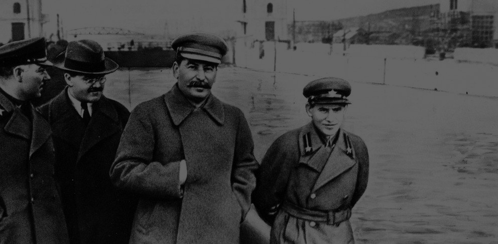
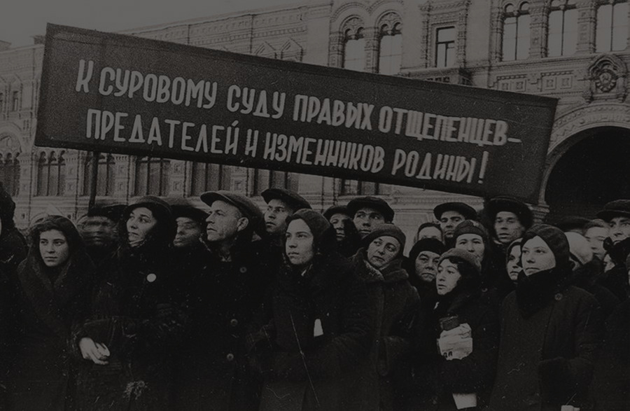
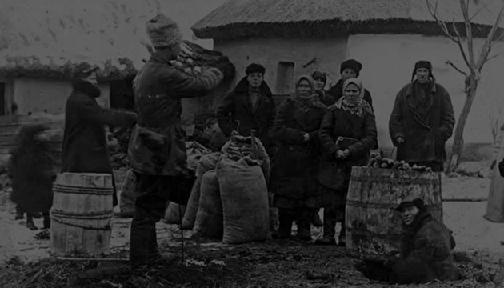

Iнформація з секретних архівів КДБ про репресованих українців
Інформація про 86 репресованих жителів села Велика Павлівка Зіньківського р-ну Полтавської обл.
ПЕРЕДУМОВИ
Термін «репресії» використовувався в СРСР для визначення методу покарання людей, які вважалися антиреволюційними елементами і ворогами народу. Чистки мотивувалися бажанням частини партійного керівництва позбавитися інакодумаючих елементів з Партії і з метою утвердження влади Сталіна.
Масові репресії в цей час супроводжувалися разом з порушеннями радянськими державними органами радянської законності.
ФАЛЬСИФІКАЦІЯ
Більшість звинувачень були базовані на примусових зізнаннях, часто здобуті за допомогою тортур і під впливом вільної інтерпретації статті 58 Кримінального Кодексу. На основі цієї статті звинуваченим приписували контрреволюційні злочини.
Замість судових процесів часто діяли так звані трійки НКВС. Сотні тисяч людей були звинувачені за сфабрикованими доказами у різноманітних політичних злочинах (шпигунство, шкідництво, саботаж, антирадянська агітація і пропаганда, таємна підготовка до державного перевороту, тероризм), а потім розстріляні або відправлені у табори ГУЛАГу.
КУРКУЛІ
Сталіну і партійному керівництву для проведення колективізації на селі потрібна була опора. Сталін розумів, що найбільшим ворогом його планам є клас заможного селянства і тому партія взяла курс на ліквідацію куркульства. Сталін закликав до «ліквідації куркульства як класу». Ця класична тактика за принципом «поділяй та володарюй» була розрахована на те, щоб ізолювати найзаможніших хазяїв від маси бідних селян.
Проте визначити, хто саме є куркуль, було не просто. Вважалося, що куркулі мають більше засобів виробництва, ніж середняки, й використовують найману працю. Підрахували, що вони становили близько 5 % селян. Але зображення урядом куркулів як «кровопивців-лихварів» та «експлуататорів» своїх односельців рідко відповідало дійсності.
Репресивна система СРСР в структурі НКВС мала «чорну касу», куди вносили захоплені під час арешту особисті кошти та коштовності репресованих осіб, їх нерухомість (квартири) й подібне майно; що врешті створило матеріально-економічну зацікавленість державних службовців фальсифікувати справи з метою пограбування народу та самозбагачення кримінальним шляхом.
Ви можете подати запит на пошук інформації про Вашого репресованого родича. Ми зробимо запит до архіву та в разі наявності справи надішлемо Вам її фотознімки будь-яким зручним способом>